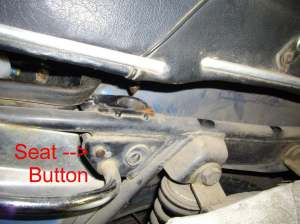
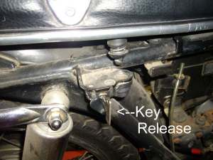
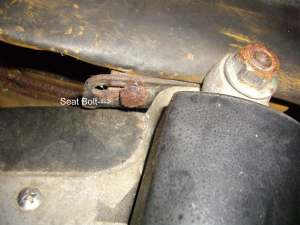
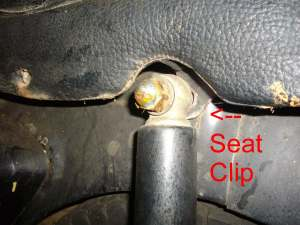
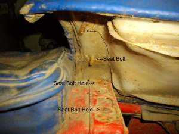
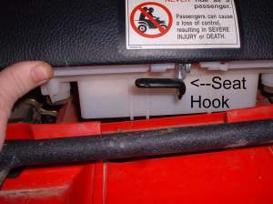
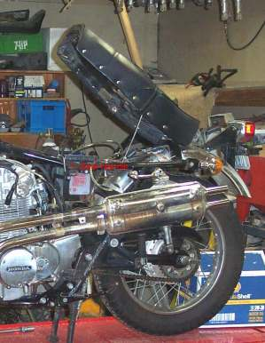
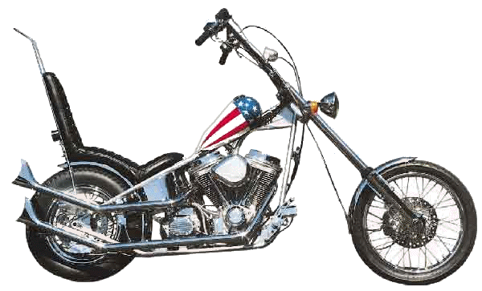
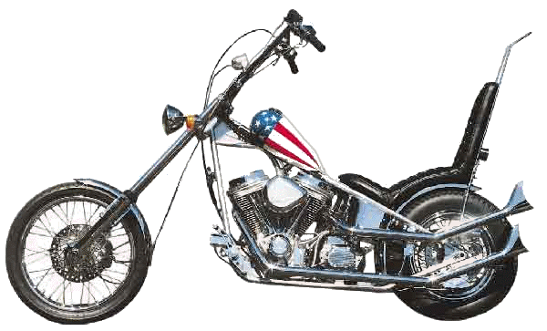

REMOVE YOUR MOTORCYCLE'S SEAT

BMW 750/5
and his kingdom was full of darkness; and they gnawed their tongues for pain,"
Revelation 16:10
Well, don't feel too bad if you can't even get your motorcycle's seat off. I have the same problem! When you can't get your seat off to fix your bike your kingdom is filled with darkness and you really do end up gnawing you tongue for pain! You would think they would standardize this. I guess we should be thankful we don't have to shift on the right anymore. Hey, I can say that. I put 30,000 miles on an old Norton Atlas twin. Anyway, here are a few ways I've found to get seats off so you can give your tongue a rest. I'm sure there are more, new ways that we will find in the future.
On the 1995 Yamaha Virago XV750 G or GC, To remove the seat;
STEPS
- Forget about buttons, switches, levers.
- Break out the handy tool box.
- Remove the left box cover and the right Battery Box cover.
note: never even knew there was a tool box under there. - Remove the top left hex drive screw that holds the tool box in place. It also acts as a hinge bolt.
- On the battery box side remove a matching position bolt (also hinge bolt).
- Slide seat forward and lift off.
- DONE! Now you have access to electrical wiring for rear lights and the fuel tank rear retaining bolt.
Here are a few pictures that I have. I guess I should have taken more pictures of seat latches over the years. It was just not something that occurred to me at the time. If you would like to help Please send me some big, clear, in focus pictures of your seat.
 Honda CB350/4 |
 Old Honda 250 Dream |
 Old Honda 50 |
 Honda XR250 |
 Yamaha Kodiak 400 ATV |
 Old Honda 450 Twin |
 |
 |
Copyright © 1999-2015 dansmc.com. All rights reserved.